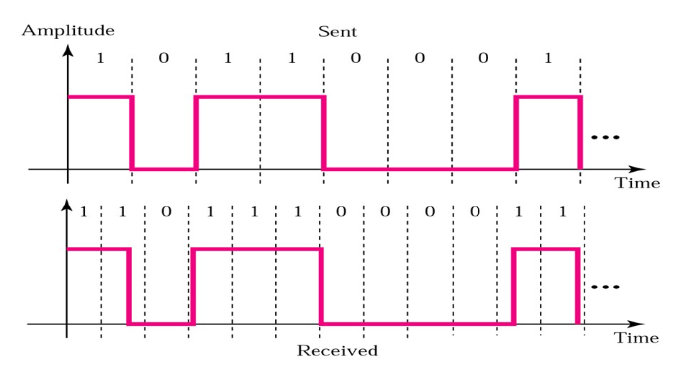

物理层
物理层的位置和功能
网络架构中最低的层，定义了字节如何通过转换为信号并通过各种通道传输。
基础概念和数据传输
-
信道
Channel：传送信息的媒体（介质） -
带宽
Bandwidth：可以稳定传输的频率范围 -
速率
bps：每秒内传输的位数量 -
波特率
baud：每秒钟能能够发送的信号单元数量T是发送信号单元之间的间隔
速率和波特率之间存在着关系，主要取决于单个信号单元能够携带的位数量，而单个信号单元能够携带的位数量由取决于单个信号单元的有效状态V，而且有：
-
信道容量：信道的最大数据率
-
吞吐量：单位时间内网络可以传送的数据位数
-
负载：单位时间内进入网络的数据位数
-
误码率：传输出错的数量占总传输量的时间
-
时延：从向网络中发送数据块的第一位开始，到数据块的最后一位被接受为止，中间经过的时间
时延一般由以下这些部分组成：发送时延、传播时延、节点处理时延、排队时延
- 发送时延：设备发送一个数据块需要的时间，和数据块的长度和发送的速率有关
- 传播时延：信号通过传输介质的时间
- 节点处理时延：交换机和路由器检查数据和选路的时间
- 排队时延：在交换机和路由器中排队等待的时间
单工、半双工、全双工
- 单工
simplex：传输只能单向发生。 - 半双工
half-duplx：传输可以双向发生，但是同一时间只能单向传输 - 全双工
full-duplx：双向传输可以同时发生
并行传输和串行传输、异步传输和同步传输
并行传输同时传输多个字符，串行传输同时传输一个字符。
-
异步串行传输
拥有独立的时钟，两个设备之间不需要进行同步。
以字符位单位进行传输。
发送两个字符之间的间隔是任意的。
接受方依靠字符中中的起始位和停止位进行同步。
-
同步串行传输
以时钟信号线对传输的数据线上的信号进行同步。
按照数据块（帧）为单位进行传输
传输损伤
收到的信号同发出的信号不同的现象称作传输损伤。这种损伤表现在模拟型号中就是信号质量的下降，在数据信号中表现为位错误。
传输损伤通常是由信号衰减、失真，传输时延和通信噪声造成的。
传输数据的理论基础
Nyquist定理
Nyquist定理：如果一个随机的信号通过一个带宽为B的低通滤波器，那么只需要2B的采样率就能够重建出这个信号。
于是对于一个无噪声，带宽为B的信道，可以支持的最高波特率就是2B。
如果单个信号单元包含了V状态，那么最大传输速率为：
香农公式
利用香农公式可以得到一个指定的信道最大的传输带宽，这是从物理的角度上给出的一个信道的极限带宽。
香农公式：
而在具体实践中信噪比SNR常常使用分贝作为单位进行表示：
在计算中需要注意换算。
传输介质
- 双绞线
Twisted Pair - 同轴电缆
Coaxial Cable - 光纤
Fiber - 电力线
Power Line 射频Radio
双绞线UTP
最常见的通信介质，可以传输模拟信号和数字信号。
双绞线的带宽取决于：
-
线缆的粗细
-
传输的距离
-
每米的匝数
双绞线通过两根相互缠绕的铜线来抗干扰，因此缠绕的越密集，抗干扰的能力就越强，带宽就更宽。
同轴电缆
比双绞线有着更好的屏蔽性能和更广的带宽。
在局域网组网中使用很少，但是在核心交换机之间比较常用。
光纤
相较于使用电信号进行通信的前两者，光纤具有高带宽，轻量和安全等特点。
电力线
通过家庭电路进行网络的传输，提高电线的利用效率。
射频
无线的传输方式。相较于有线的传输方式，射频传输会有更高的误码率和更高的延迟。
数字调试和编码
信号调制技术
- 电话：模拟信号到模拟信号
- 调制：数字信号到模拟信号
调制
通过模拟信号来传输数字信号：
- 通过不同的频率来表示不同的比特位
- 通过不同的振幅来表示不同的比特位
- 通过不同的相位来表示不同的比特位
多级调制技术
通过同时利用不同的振幅和相位来表示传输的比特位，提高单个信号单元能携带的信息数量。
通常使用星云图来表示：

而且相同的调制级数可能存在不同的实现。
编码
使用电平表示状态
使用高电平表示1， 使用低电平表示0。这种编码方式被称作不归零NRZ。
但是使用这种方式可能会导致同步失败：

一段连续的高电平/低电平可能会被误判。
使用电平翻转表示状态
在时钟开始的时候如果发生调变就是1，不发生调变就是0。
曼彻斯特编码
指定电平的变化必须发生在时钟周期的中间。这样同时传输来信号和时钟，有着自同步功能。
电平由高变低表示1，电平由低变高表示0。

是现在局域网编码使用的编码格式。
但是目前的高速局域网已经不适用了，因为需求的频率较高。（十兆网升级到百兆网仍然使用曼彻斯特编码，只是同时将线路缩短十倍，但是千兆网及更高就不用了（或帧突发、载波扩展？））
数字化模拟信号PCM
通过记录一系列离散的点来表示原来的模拟信号。
PCM一般具有三个步骤：
-
采样
按照
Nyquist定理，采样率需要是最高频率的两倍。 -
量化
将信号强度对应为指定好的量级。
不同的国家和地区可能有着不同的量化方式。
-
编码
复用
频分复用FDM
将不同频率的信号合并在一起传输，最大化提高信道的利用效率。
时分复用TDM
将时间分为若干个不同的时间片timeslot，信号将被分配到不同的时间片发送。
静态时分复用（static）
在每一个发送帧中都为每个用户保留空间以进行复用，一种同步的时分复用方式。
但是这样做可能会导致比较大的浪费。在电话网络中应用比较广泛，而在计算机网络中应用比较少。
统计时分复用（synchronous）
只发送需要发送的数据，在需要时分复用的时候才进行复用。

但是这样需要加上地址头以区分不同的用户发送的数据。
码分复用
每一个用户都可以使用整个信号在任意时间发送信息，不同用户之间传输的数据是通过编码理论的方式分开的。
物理网络例子：PSTN
就是最原始的电话网络，相关：T1链路标准

- 本地环路
Local Loop：一般还是采用模拟双绞线传输，从端局到用户。 - 中继线路
Trunk：一般是数字同轴线/光纤传输，在端局和不同交换机之间传输。 - 交换机
Switch Offices：将电话呼叫在不同的端局之间联通。
传输的速率
当计算机利用电话网络进行通信的时候，需要采用调制解调器进行数字信号和模拟信号之间的转换。端局还需要进行一次数模转换，那么如果两台采用调制解调器的计算机之间直接通信，由于数模转换之间产生的噪声，通过香农公示进行计算得到的最大传输速度大概是35kpbs。如果之间和ISP的服务器之间通信，这是就可以省去一般的数模转换，这里的传输速率就可以达到56kpbs。
xDSL 服务
为了提高电话网上网的速度，同时也解决上网的时候就不能打电话，传真的问题，非对称数字用户线ADSL技术出现了。
ADSL技术采用频分复用技术，将大概1.1Mhz的信号分成256个4312.5Hz的信道，其中信道0用于电话通信，信道1~5不被使用，而是用作电话信号和数字信号之间的隔离带。剩下的250个信道都被用于数据通信，其中两个信道用于控制，剩下的信道都是用来通信。
每个信道都采用类似于V.34的编码方式，采样率为4000 baud，通过正交调幅发送的数据大概为15 bit/buad，在极限情况下的最大传输速度能达到13Mpbs左右。同时为了提高用户体验，ISP往往都会把更多的信道用来作为下行信道，使提供的下载带宽大于上传带宽。
物理网络例子：有线电视网络

同样采用频分复用的技术。
下载链路采用QAM-64编码，传输速度大概能达到30Mbps，上传链路采用QPSK编码，传输速度大概能达到12Mpbs。
链路交换和分组交换
链路交换
在需要交换时，在通信的双方之间建立专用的通路，资源提前分配。通信有着三个阶段：链接建立，数据传输，链接中止。
电话网络交换中常采用这种方式。
优点是延迟比较低，服务的质量比较好，缺点是在建立链接的时候需要花费比较长的时间，固定的带宽也不适合计算机使用，当双方都不发送数据的时候，建立数据链路就会被浪费。
分组交换
数据在发送之初就被分成不同的组，每个包单独进行路由选择，每个节点都会先存储收到的数据包再发送给下一个节点（存储——转发策略），在这过程中资源是动态分配的。每个包都需要携带路由需要的信息。
链路交换和分组交换所花费的时间

物理层协议示例：10BaseT
物理层需要规定物理接口：
- 机械特性
- 电气特性
- 功能特性
- 过程特性
IEEE802.3——10BaseT
以双绞线作为传输介质，传输速度能够达到10Mpbs的协议。
- 机械特性：使用
RJ-45接口作为物理接口 - 电气特性：使用曼彻斯特编码，电压范围在
-2.5V~2.5V之间 - 功能特性：使用接口中的
pin1&2对线作为发送线，pin3&6对线作为接受线